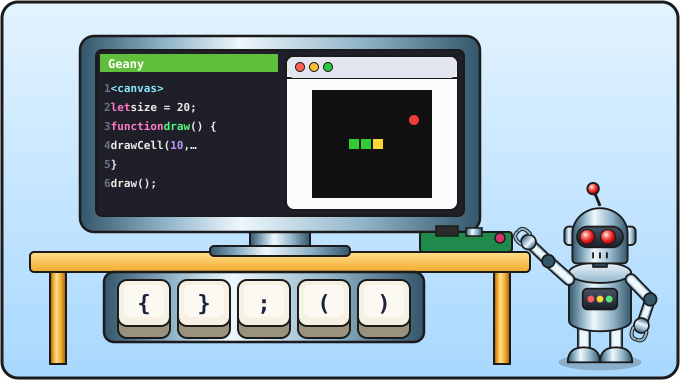

Lesson 0 of 16 ⏱ 45–60 minutes
Setting up the computer
Before we write a game, let's get our workplace ready: we'll see how the desktop works, find where the brackets hide on the keyboard, make a folder for our programs and set up a code editor.
- get to know the Raspberry Pi OS desktop;
- find the "programmer" symbols on the keyboard;
- create a folder called
codefor your programs; - open and set up the Geany editor;
- arrange the editor and browser windows so they're comfortable to work with.
| 5 min | The desktop and the menu |
| 15 min | The keyboard: symbols and a little practice |
| 10 min | The file manager and the code folder |
| 15 min | The Geany editor: find it, open it, set it up |
| 5–10 min | The browser, arranging windows, the checklist |
You need Raspberry Pi OS with desktop. If it isn't installed yet, write it to a memory card using Raspberry Pi Imager from raspberrypi.com. It's handy to create a separate user for your child right away.
Check that the keyboard layout in the system matches the physical keyboard (for example, English (US) or English (UK)). You can do this in Menu → Preferences → Control Centre / Raspberry Pi Configuration, in the keyboard or localisation section (the names differ slightly between system versions).
It's best to go through this lesson together with your child.

1. The desktop
Turn on the Raspberry Pi and wait for the desktop to appear — a screen with a picture and a bar along the top. That bar is called the taskbar.
- In the left corner of the taskbar there's a raspberry icon 🍓. That's the Menu: it has all the programs, sorted into sections.
- Next to it are icons for the most useful programs: the browser (for visiting websites), the file manager (a folder icon) and the terminal (a little black screen). We won't need the terminal.
- On the right side of the taskbar you'll find the clock, the volume and the network.
2. A programmer's keyboard
Programs are written with ordinary letters and lots of different symbols: ( ) { } [ ] ; " = < >. Some of them you may never have typed before. Let's find them!
Where the symbols hide
Writing Shift + 9 means "hold down Shift and, without letting go, press 9". The table is for a US keyboard; differences on a UK keyboard are noted below it.
| Symbol | Name | How to type it |
|---|---|---|
( ) | round brackets (parentheses) | Shift + 9 and Shift + 0 |
{ } | curly brackets (braces) | Shift + [ and Shift + ] (the keys to the right of P) |
[ ] | square brackets | the keys to the right of P, without Shift |
< > | angle brackets ("less than", "greater than") | Shift + , and Shift + . |
; | semicolon | the key to the right of L |
: | colon | Shift + ; |
" | double quote | Shift + ' (the key two to the right of L) |
' | single quote | the key two to the right of L |
/ | slash | the key to the left of the right Shift |
= and + | equals and plus | the key to the left of Backspace; with Shift it's plus |
- and _ | minus and underscore | the key to the right of 0; with Shift it's underscore |
* | asterisk (times) | Shift + 8 |
! | exclamation mark | Shift + 1 |
& | ampersand ("and") | Shift + 7 |
| | vertical bar ("or") | Shift + \ (usually above Enter) |
" is Shift + 2, and | is Shift + \ — but the \ key is next to the left Shift. Everything else is the same.
Important keys
- Enter — new line.
- Backspace — delete the character to the left of the cursor; Delete — to the right.
- Tab — indent (move the line to the right).
- The arrows ← ↑ → ↓ — move the cursor (the blinking line) around the text.
- Ctrl + Z — undo the last action. Your magic "go back" button!
( ) { } [ ] < > ; : " ' = + * !
Then close the editor. When it asks "Save?", you can answer "No": this was just practice.
3. A folder for your programs
A computer keeps everything in files: pictures, music, programs. Files live in folders, like sheets of paper in desk drawers. Let's make one drawer for all the programs from this course.
- Click the file manager icon (a folder) on the taskbar. Your home folder opens. This is your personal place on the computer; it already has folders like "Documents" and "Downloads".
- Click with the right mouse button on an empty spot in the window (not on a folder).
- In the menu choose Create New… → Folder.
- Type the name
codeand press Enter or OK.
Done: a folder called code has appeared next to the others. All the programs from the course will live in it.
test.html, snake.html.
4. The Geany code editor
You can write code in any text editor, but it's easier in a special editor for programmers. It colours the code, numbers the lines and indents for you. We'll use Geany (say "jee-nee"): it's simple and runs fast on a Raspberry Pi.
Find Geany
Open Menu 🍓 → Programming. If Geany is there, great — go on to the setup.
If Geany isn't there, it needs to be installed (ask a grown-up, a password may be needed):
- Menu → Preferences → Recommended Software.
- On the left choose the Programming section.
- Find Geany in the list and tick it.
- Click Apply and wait for the installation to finish.
sudo apt install geany.
Set up Geany
Open Geany: Menu → Programming → Geany.
- Big font. Edit → Preferences → Interface tab → Fonts → the Editor line. Click the font button and set the size to 16 or 18. You can also make the font bigger with Ctrl + + and smaller with Ctrl + -.
- Indentation. In the same preferences: Editor tab → Indentation. Set Width: 2 and Type: Spaces. Click OK.
- Tidy up. In the View menu untick Show Sidebar and Show Message Window. That leaves room just for code.
- Line numbers. To the left of the text there should be line numbers: 1, 2, 3… If they're missing, switch them on with View → Show Line Numbers.
5. The browser
Our programs will be run by a browser — the same program you use to visit websites. We'll use Firefox — its icon is an orange fox. Find it on the taskbar or in Menu → Internet and open it.
.html files open in it with a double click. In Raspberry Pi OS this is in Menu → Preferences → Control Centre / Raspberry Pi Configuration, System tab, Browser → Firefox. If Firefox isn't installed, you'll find it in Recommended Software (the Internet section).
6. Arranging the windows
Programmers keep looking at the code and then at the result. Put the windows side by side: Geany on the left, the browser on the right. Drag them by their title bars and move the edges so each takes up half the screen.
Check yourself
- I can type
{ } ( ) ; ". - There's a
codefolder in my home folder. - Geany opens, the font is big, the indent is 2 spaces.
- I can open Firefox and put the windows side by side.